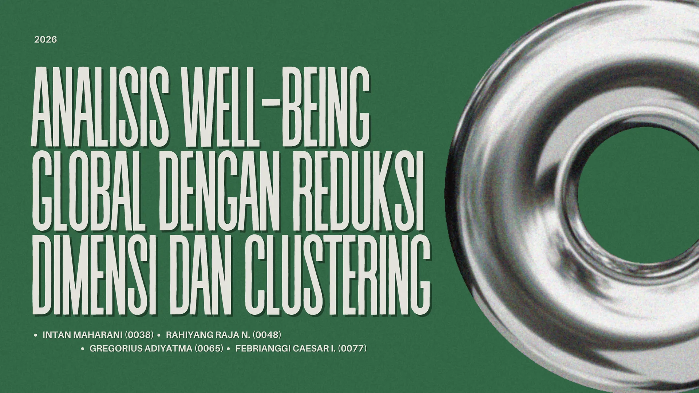

This slide image could not load. Check your connection, or open the PDF instead.
Keyboard: ← → to move, F full screen, G all slides. On a phone, swipe the slide.

Keyboard: ← → to move, F full screen, G all slides. On a phone, swipe the slide.